Tobitatsu Hoikuen · Est. 2026 · Kasuga, Fukuoka
The Foundation
of a Beautiful
Life.
人生の土台を、ここで。
0〜2歳という、脳と心がもっとも豊かに育つ時期。わたしたちは「預かる」のではなく、その子が生涯をかけて花ひらくための根っこを、ていねいに育みます。
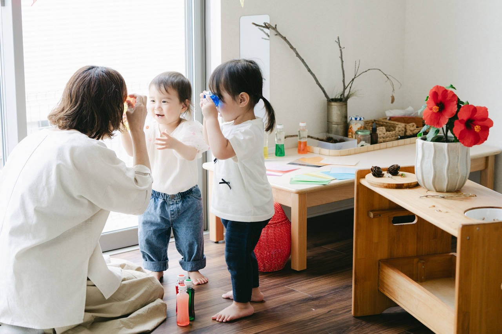
Tobitatsu Hoikuen · Est. 2026 · Kasuga, Fukuoka
人生の土台を、ここで。
0〜2歳という、脳と心がもっとも豊かに育つ時期。わたしたちは「預かる」のではなく、その子が生涯をかけて花ひらくための根っこを、ていねいに育みます。

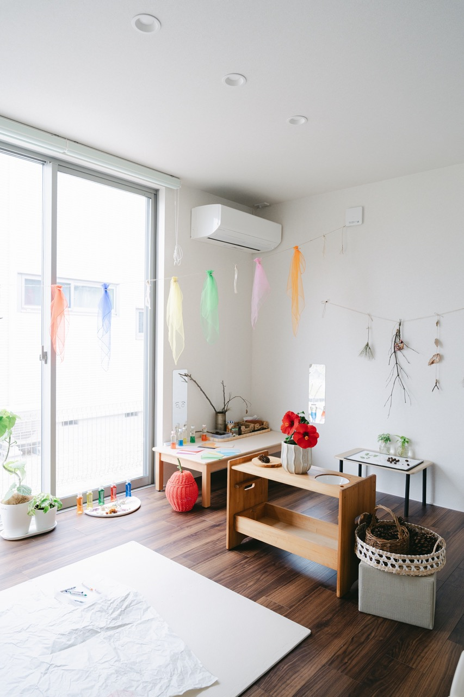
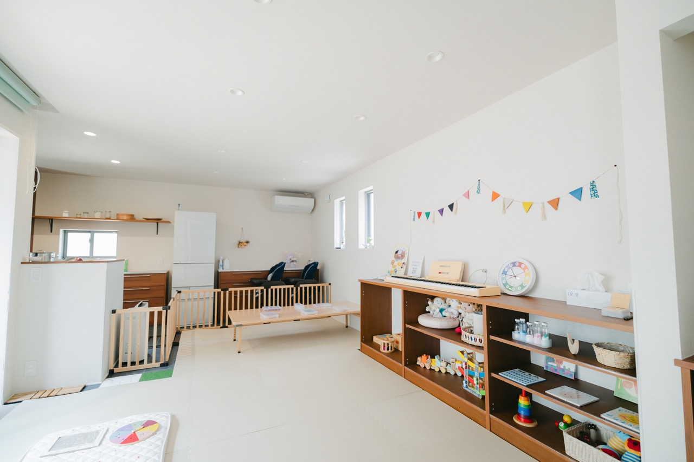
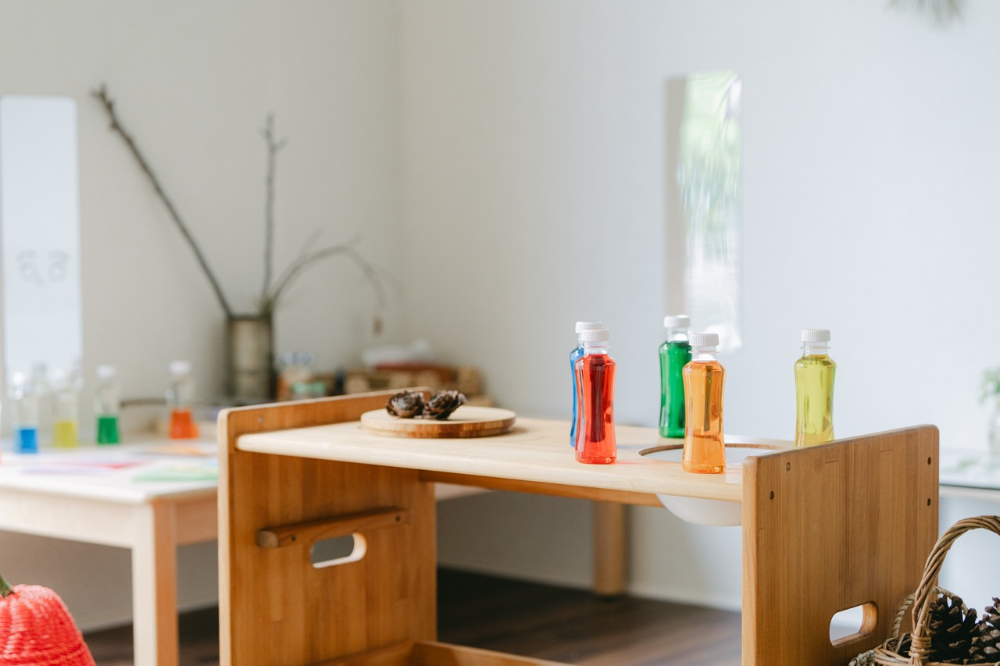
Our Story
Philosophy
「いい保育園に入れたい」ではなく、「この子の人生を豊かにしたい」——そう願う家庭のために、この園はあります。
定員14名の少人数制。ひとりひとりの「いま」を見つめ、レッジョ・エミリア・アプローチを参考に、子どもを主体とした環境を整えています。
"子どもは百の言葉を持っている。その声に、耳を澄ます。"
レッジョ・エミリア・アプローチ
子どもを有能な存在として捉え、好奇心・探求・表現を軸に、環境が「第三の教育者」となる保育を実践。毎日のドキュメンテーションで育ちを可視化します。
自然素材と本物体験
プラスチックではなく木・石・布・水。五感を通じた本物の体験が、脳の神経回路を豊かにつなぎます。季節の変化を肌で感じる環境を大切にしています。
ベビーヨガとからだの知性
元ダンサーが監修したオリジナルプログラムを、保育士が毎日の保育の中で実践。乳幼児期から身体感覚を育み、穏やかで安定した情緒の基盤をつくります。
写真・ドキュメンテーション
日々の探求の瞬間を丁寧に記録。ご家庭と育ちを共有することで、保育園と家庭が一体となって子どもを支える環境をつくります。
Daily Life
登園後は、自然素材の空間でゆっくりと体を目覚めさせます。日光と緑に包まれた環境で、子どもが自ら動き出す朝を大切にしています。
子どもの「なぜ？」から始まる探求活動。アトリエや屋外環境で、創造・実験・表現を繰り返しながら思考力の土台をつくります。
農薬不使用の野菜、こだわりの調味料、麹や発酵を取り入れた献立。食べることは生きること——五感で味わう豊かな食卓を毎日用意します。
元ダンサー監修のプログラムを保育士が実践。呼吸・動き・感覚を育むヨガの時間が、身体知性と自己調整力の基盤をやさしく育みます。
オーガニックコットンの寝具、適切な温湿度管理、静かな環境。深い眠りが、脳と体の成長を支えます。
毎日の探求と発見を写真と言葉で記録。お迎えのたびに「今日のあの子」をご家族と共有します。成長の物語を、ともに綴ります。
Nourishment
調味料ひとつから選び抜く。それが、とびたて保育園の食への姿勢です。乳幼児期に何を食べるかは、腸内環境・免疫・脳の発達に深く関わります。食育は、知識を教えることではなく、おいしさと喜びを体で覚えること。
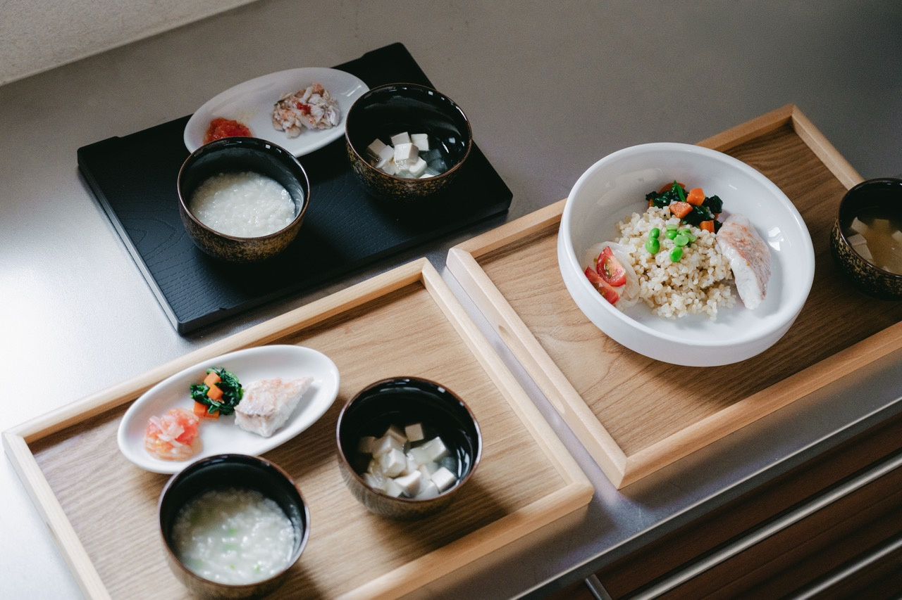
オーガニック野菜
農薬・化学肥料不使用の野菜を使用。産地・生産者を確認した上で仕入れ、旬の恵みを毎日の食卓に届けます。
麹・発酵食品
米麹・味噌・甘酒など、日本の発酵の知恵を取り入れた献立。腸内環境を整え、免疫力の基盤をつくります。
調味料へのこだわり
添加物不使用の醤油・みりん・塩を厳選。素材の味を引き出す、シンプルで本物の調味料だけを使用しています。
食体験・食育活動
土に触れる、種をまく、野菜を洗う——食の全プロセスに関わることで、命への感謝と食への意識を育みます。
A Day in Life
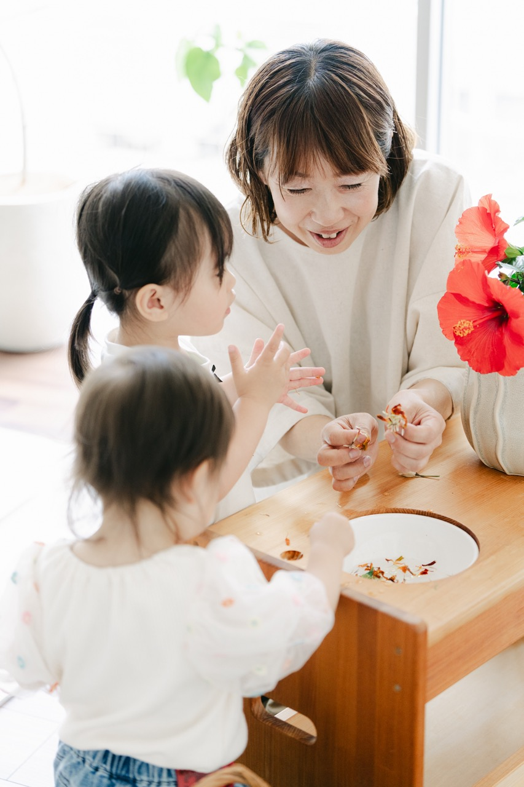
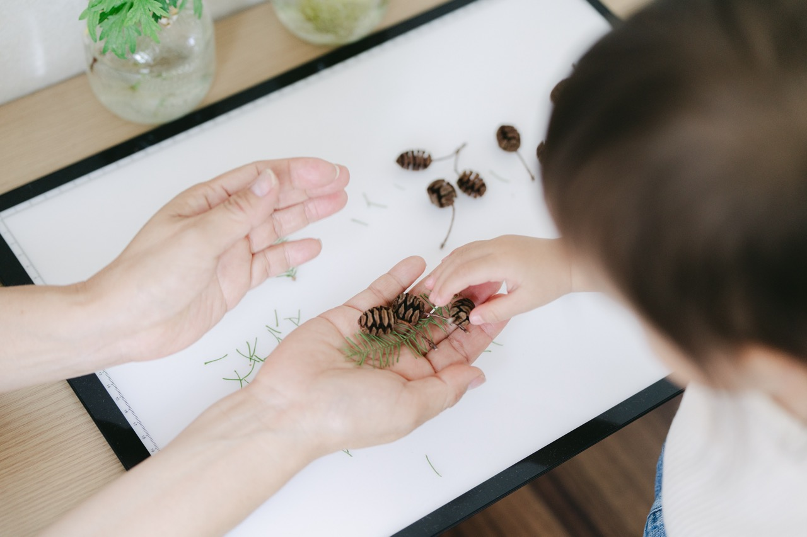
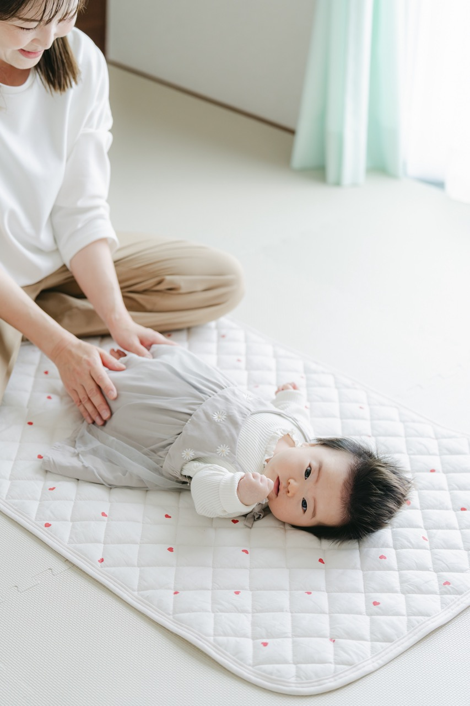
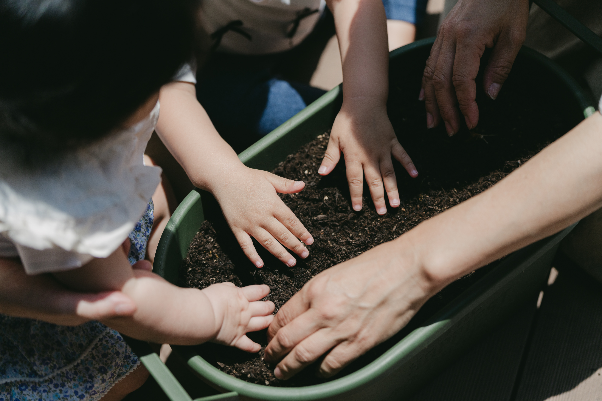
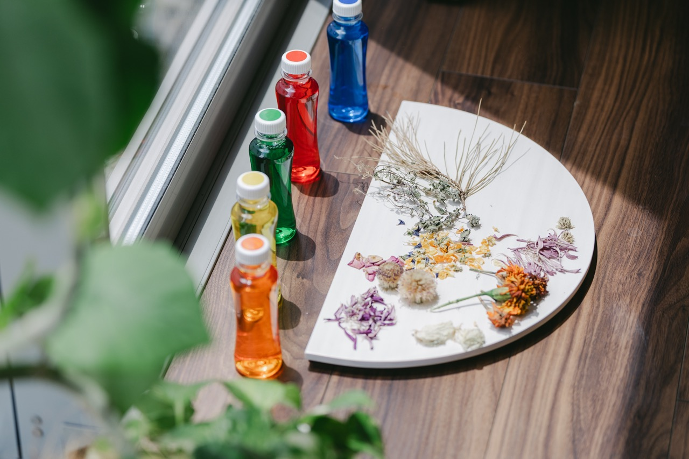
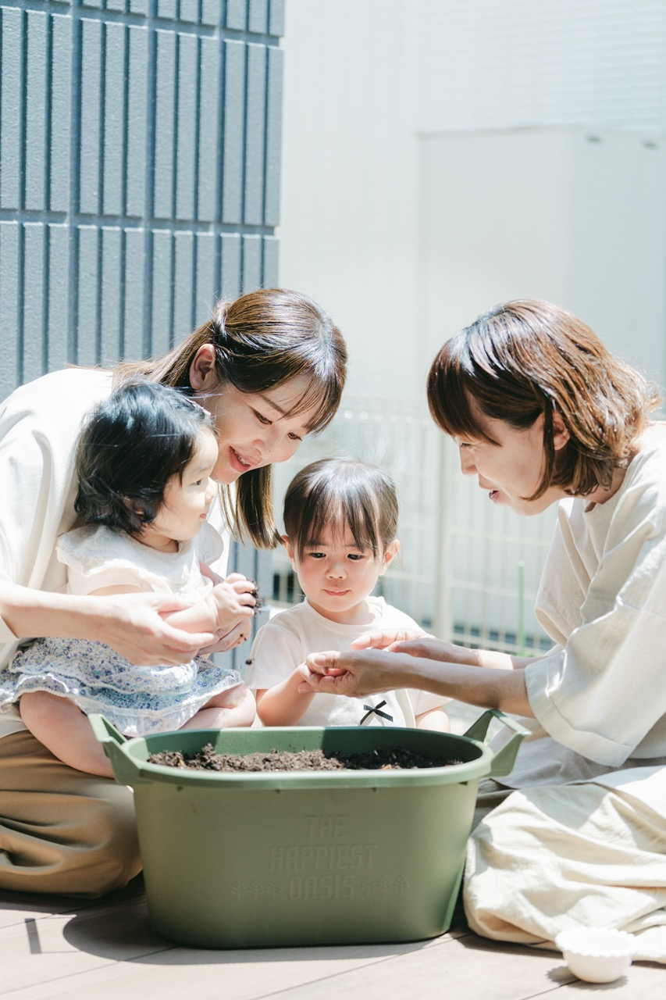
From Kitchen to Table
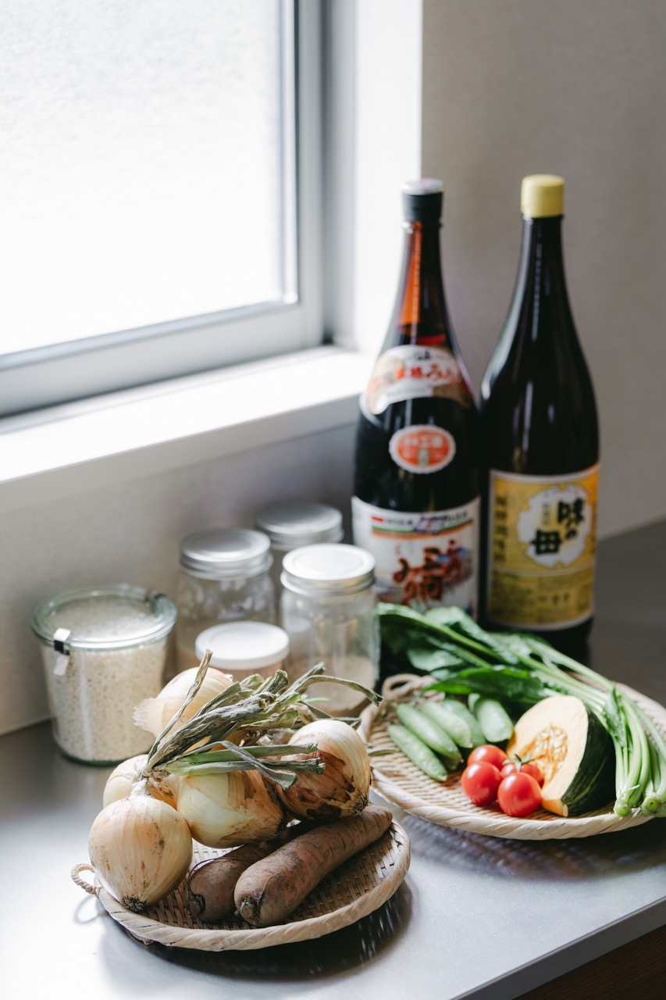
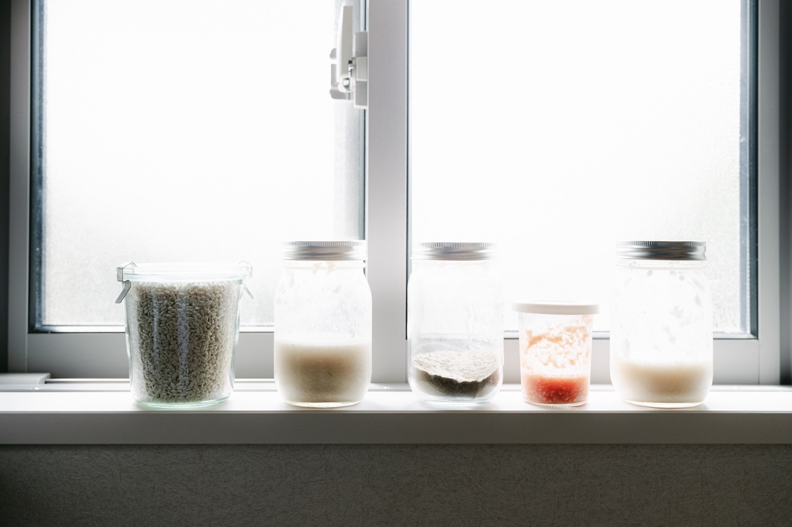
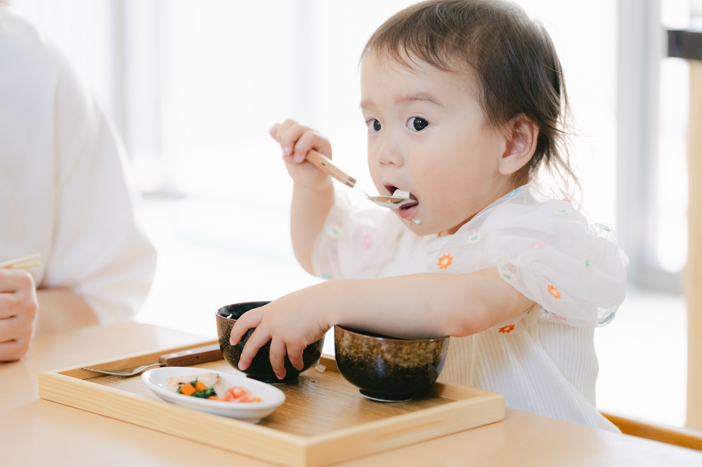
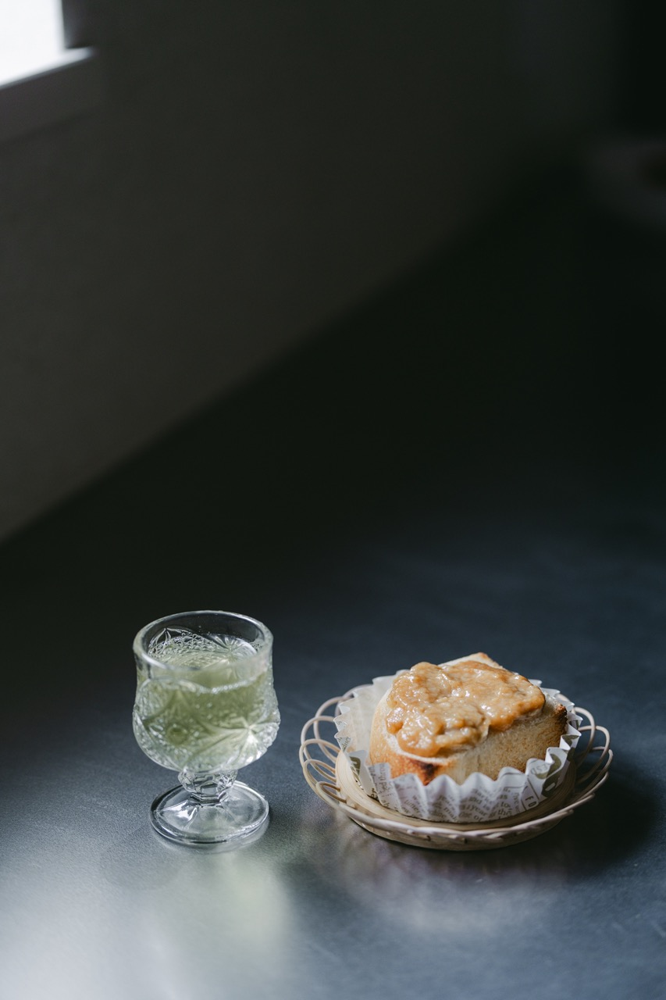
Investment
一時預かりから始め、じっくりと園の空気を感じてください。月極保育への転換は、ご家族のペースでご検討いただけます。
Weekly 2days
週2コース
¥45,000 / 月
開園時間：8:30〜17:30 ※ フリーランスの方や家族時間を大切にしながら通いたいご家庭に。
Weekly 3days
週3コース
¥60,000 / 月
開園時間：8:30〜17:30 ※ 徐々に慣れていきたいご家庭に。週2から週3へのステップアップも柔軟に対応します。
Full-time
月極フルタイム
¥80,000〜 / 月
開園時間：8:30〜17:30 ※ 認可外保育施設。企業主導型保育・自治体補助金の対象可否はご相談ください。
Temporary Care
まずここから始めてみてください。1時間からご利用いただけます。事前登録制。
0歳〜 Milk Support
ミルク対応コース
ミルクはご持参ください。
離乳食以降 With Meal
給食・おやつ付きコース
午前午後の麹おやつ・オーガニック給食付き
※ 少人数制のため、ご案内できる枠に限りがあります。ご希望の方は公式LINEよりご連絡ください。
Journey
押しつけはしません。まず、この場所の空気を感じてください。
LINE登録 または お問い合わせ
公式LINEをご登録いただくか、フォームよりご連絡ください。園の最新情報・空き状況・ワークショップのご案内をお届けします。
プレッシャーなし。情報収集だけでもOK見学・個別相談（無料）
実際の保育の様子をご覧いただきながら、園長がご家族のお話を伺います。所要時間は60〜90分。お子さまもご一緒にどうぞ。
月2〜4組限定の少人数見学一時預かりで体験（推奨）
まずは一時預かりでお子さまと保育園の相性を確認。給食・環境・保育士との関係をじっくり体感してからご判断いただけます。
ご入園・慣らし保育
お子さまのペースに合わせた慣らし保育からスタート。保護者の方との信頼関係を丁寧に築きながら、新しい「第二の家」への移行を支えます。
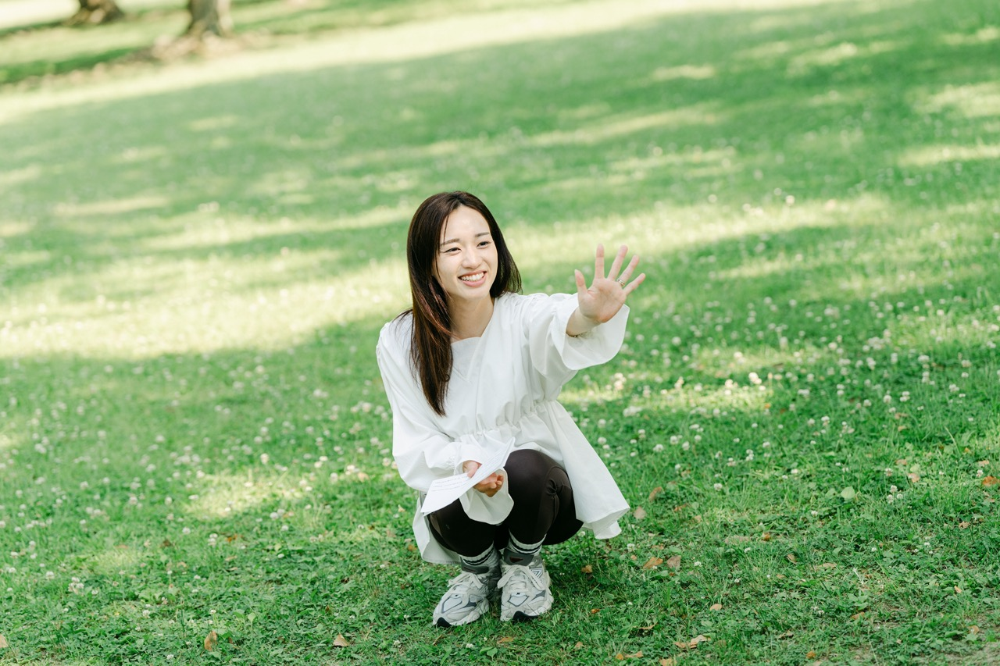
Director
Chie Oto · 園長
"子どもの口に入るものは、すべて本物であってほしい。食と環境と愛情が重なる場所をつくりたくて、この園を開きました。"
Credentials
LINE Official
空き状況のご案内、季節のワークショップ情報、食育レシピ、保育のエッセイをお届けします。登録だけでも、もちろんOKです。
Philosophy
「いい保育園に入れたい」ではなく、「この子の人生を豊かにしたい」——そう願う家庭のために、この園はあります。
定員14名の少人数制。ひとりひとりの「いま」を見つめ、レッジョ・エミリア・アプローチを参考に、子どもを主体とした環境を整えています。
"子どもは百の言葉を持っている。その声に、耳を澄ます。"
レッジョ・エミリア・アプローチ
子どもを有能な存在として捉え、好奇心・探求・表現を軸に、環境が「第三の教育者」となる保育を実践。毎日のドキュメンテーションで育ちを可視化します。
自然素材と本物体験
プラスチックではなく木・石・布・水。五感を通じた本物の体験が、脳の神経回路を豊かにつなぎます。季節の変化を肌で感じる環境を大切にしています。
ベビーヨガとからだの知性
元ダンサーが監修したオリジナルプログラムを、保育士が毎日の保育の中で実践。乳幼児期から身体感覚を育み、穏やかで安定した情緒の基盤をつくります。
写真・ドキュメンテーション
日々の探求の瞬間を丁寧に記録。ご家庭と育ちを共有することで、保育園と家庭が一体となって子どもを支える環境をつくります。
Daily Life
登園後は、自然素材の空間でゆっくりと体を目覚めさせます。日光と緑に包まれた環境で、子どもが自ら動き出す朝を大切にしています。
子どもの「なぜ？」から始まる探求活動。アトリエや屋外環境で、創造・実験・表現を繰り返しながら思考力の土台をつくります。
農薬不使用の野菜、こだわりの調味料、麹や発酵を取り入れた献立。食べることは生きること——五感で味わう豊かな食卓を毎日用意します。
元ダンサー監修のプログラムを保育士が実践。呼吸・動き・感覚を育むヨガの時間が、身体知性と自己調整力の基盤をやさしく育みます。
オーガニックコットンの寝具、適切な温湿度管理、静かな環境。深い眠りが、脳と体の成長を支えます。
毎日の探求と発見を写真と言葉で記録。お迎えのたびに「今日のあの子」をご家族と共有します。成長の物語を、ともに綴ります。
Nourishment
調味料ひとつから選び抜く。それが、とびたて保育園の食への姿勢です。乳幼児期に何を食べるかは、腸内環境・免疫・脳の発達に深く関わります。食育は、知識を教えることではなく、おいしさと喜びを体で覚えること。
オーガニック野菜
農薬・化学肥料不使用の野菜を使用。産地・生産者を確認した上で仕入れ、旬の恵みを毎日の食卓に届けます。
麹・発酵食品
米麹・味噌・甘酒など、日本の発酵の知恵を取り入れた献立。腸内環境を整え、免疫力の基盤をつくります。
調味料へのこだわり
添加物不使用の醤油・みりん・塩を厳選。素材の味を引き出す、シンプルで本物の調味料だけを使用しています。
食体験・食育活動
土に触れる、種をまく、野菜を洗う——食の全プロセスに関わることで、命への感謝と食への意識を育みます。
A Day in Life
From Kitchen to Table
Investment
一時預かりから始め、じっくりと園の空気を感じてください。月極保育への転換は、ご家族のペースでご検討いただけます。
Weekly 2days
週2コース
¥45,000 / 月
開園時間：8:30〜17:30 ※ フリーランスの方や家族時間を大切にしながら通いたいご家庭に。
Weekly 3days
週3コース
¥60,000 / 月
開園時間：8:30〜17:30 ※ 徐々に慣れていきたいご家庭に。週2から週3へのステップアップも柔軟に対応します。
Full-time
月極フルタイム
¥80,000〜 / 月
開園時間：8:30〜17:30 ※ 認可外保育施設。企業主導型保育・自治体補助金の対象可否はご相談ください。
Temporary Care
まずここから始めてみてください。1時間からご利用いただけます。事前登録制。
0歳〜 Milk Support
ミルク対応コース
ミルクはご持参ください。
離乳食以降 With Meal
給食・おやつ付きコース
午前午後の麹おやつ・オーガニック給食付き
※ 少人数制のため、ご案内できる枠に限りがあります。ご希望の方は公式LINEよりご連絡ください。
Journey
押しつけはしません。まず、この場所の空気を感じてください。
LINE登録 または お問い合わせ
公式LINEをご登録いただくか、フォームよりご連絡ください。園の最新情報・空き状況・ワークショップのご案内をお届けします。
プレッシャーなし。情報収集だけでもOK見学・個別相談（無料）
実際の保育の様子をご覧いただきながら、園長がご家族のお話を伺います。所要時間は60〜90分。お子さまもご一緒にどうぞ。
月2〜4組限定の少人数見学一時預かりで体験（推奨）
まずは一時預かりでお子さまと保育園の相性を確認。給食・環境・保育士との関係をじっくり体感してからご判断いただけます。
ご入園・慣らし保育
お子さまのペースに合わせた慣らし保育からスタート。保護者の方との信頼関係を丁寧に築きながら、新しい「第二の家」への移行を支えます。
LINE Official
空き状況のご案内、季節のワークショップ情報、食育レシピ、保育のエッセイをお届けします。登録だけでも、もちろんOKです。
Visit Us
月に2〜4組限定で見学をお受けしています。お子さまと一緒に、ぜひ実際の空気を感じにきてください。見学は無料。入園の強制はありません。
Access
福岡県春日市若葉台東4丁目12-3
開園時間：8:30〜17:30
TEL：092-984-5377
見学のご予約・ご質問は公式LINEからお気軽にどうぞ。「見学希望」とひとこと送るだけでOKです。
プレッシャーはありません。質問だけでも、情報収集だけでも、歓迎です。